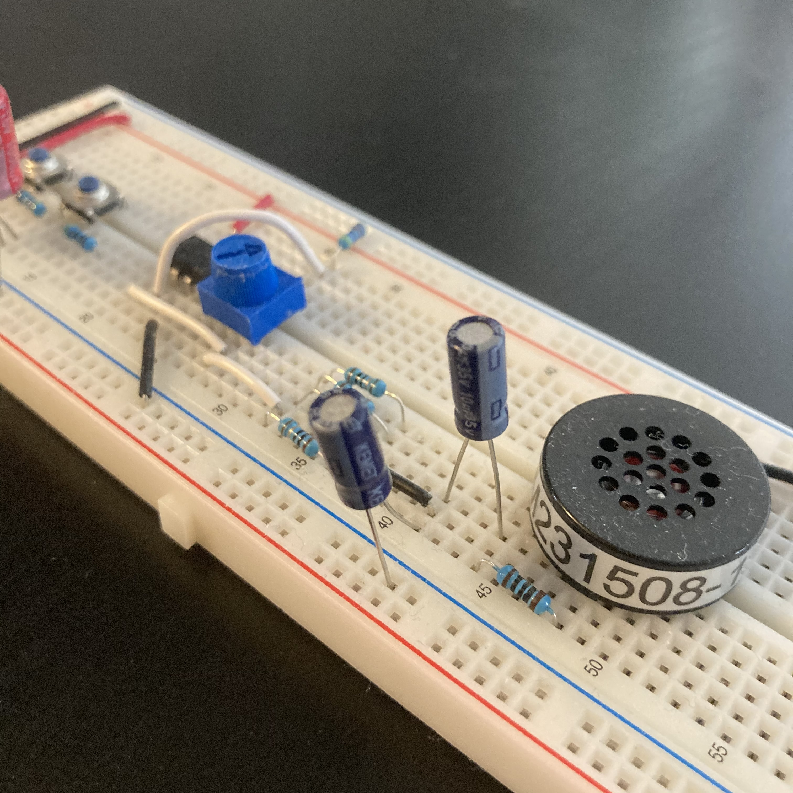

Through my time at school, as well as experimenting personally, I’ve developed my bench skills with electronics. As part of the Integrated Learning Stream (ILS) at the University of Calgary, we were given the opportunity to work on hands-on activities.
Although I wasn’t able to experience labs in-person due to the pandemic, the school sent us our own individual kits for us to play with. The labs have given me a better grasp on how to design circuits on schematics and then translate those circuits to the breadboard. Some examples of circuits that I’ve built are:
The time I’ve spent in the ILS program has taught me how to work with oscilloscopes. Working on the circuits on my own was difficult, the oscilloscope helped me in debugging my circuits. This debugging made me a more independent learner who’s able to solve problems on my own. Some skills I've picked up are:
A band pass filter circuit.
